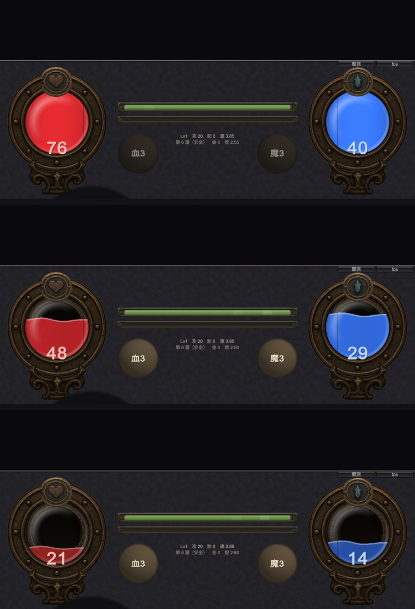
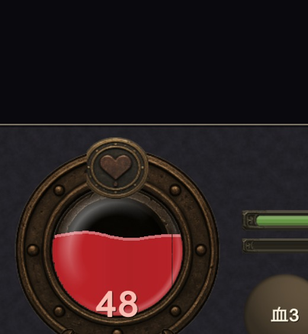
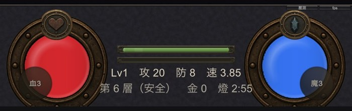

地城迴響 · 改版第一版
照你說的改成左右各一顆球，液面高度表示血量與魔力，液體有波動。下面是 iOS 模擬器的實機畫面，還沒出 TestFlight。


球的填充是「圓的一段」，不是矩形。直覺會用 shader 或 RenderTexture 做遮罩，但這個專案踩過 shader 被打包剝掉的坑（真機變成橘色方塊，Editor 完全看不出來），為了一個血條再引入同類風險不划算。
改用垂直細條：把球切成最多 64 道窄長條，每道自己算圓的半高 √(1−x²)·R 與波浪高度，取交集就是要畫的那一段。圓形裁切因此是精確的，不是近似，而且全程只用 GUI.DrawTexture。
素材 $0.20（一張圖出鑲框、球腔、底座）。玻璃反光那塊生失敗了，改用程式產生——而且這樣更好，反光本來就該跟著液面移動，做成固定素材反而綁死。橫條版的徽記直接沿用，沒有重生。

能力摘要的字變小了。球佔掉兩側之後中間欄比以前窄，字級改成跟著欄寬自動收。截圖上讀得到，但手機上會不會太小要你實際看。
波動是靜態截圖。晃動、液面亮線、低血脈動都會動，截圖只能證明畫在對的位置，證明不了看起來順不順。
只在 iPhone 比例上看過。iPad 的長寬比還沒拍。
玻璃反光還很弱。調亮過一次仍然不明顯，可能要再加強，或者你覺得不需要也可以拿掉。
| 要決定的 | 為什麼輪不到我決定 |
|---|---|
| 球的大小 | 現在是螢幕寬的 24%。放大比較有份量，但中間欄會再變窄——那是取捨，不是對錯。 |
| 液體的飽和度 | 紅與藍現在偏鮮豔，跟周圍沉穩的金屬對比強。醒目有醒目的用處（血量要一眼看到），要不要壓下去是你的偏好。 |
| 要不要出 TestFlight 看動態 | 波動的手感沒辦法用截圖判斷。我的建議是出一版，看完再一起調參數，比來回猜快。 |